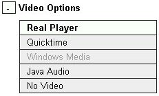

Welcome to the AutoView help file. AutoView was developed by EuroMotor-AutoTrain as a system for putting video, slides and subtitles together to form an on-line presentation. The entire AutoView system is written in Javascript, so it is essential that you have this enabled in your browser.
AutoView presentations can be delivered in a variety of formats. AutoView will attempt to automatically detect the plugins available on your computer and select the most appropriate for your system. You will find more information on manually selecting video and slide formats in the sections below, but hopefully in most circumstances this will not be necessary.
Select the topic you require help on from the list below :-
You can find additional technical notes and help on known problems on http://www.autotrain.org/services/autoview-technical-notes.shtml
AutoView is written to be cross-browser and cross-platform compatible as far as is possible given the limits of current technology. However, due to the complex interactions between many software components which AutoView requires, there may be cases where the software will fail to work as expected.
AutoView is supported on a range of web browsers and operating systems (Including Internet Explorer, Mozilla Firefox and Opera). A full status list of all known browser issues and browser support is maintained at http://www.autotrain.org/services/autoview-browser-notes.shtml .
The presentations make considerable use of Javascript. Consequently, if you wish to view a presentation, you must be using a Javascript capable browser, and you must have Javascript enabled.
Beyond this, there are certain things that we needed to do, in order to achieve some of the effects that we wanted, which can be explicitly barred by your browser, depending on your security settings. For example, in Internet Explorer the Quicktime Player plug-in is an Active-X control, and in order to change the position of the video in response to a click on the slide menu, it has to receive a message from the script. It is possible, within the security settings of IE either to disable all Active-X controls, or to disable the scripting of those controls, even if they are marked safe for scripting.
If AutoView attempts to do something that is prevented by your security settings, you will receive a Script Error warning. If you receive such a warning, it might be worthwhile to review your security settings to see if this could be the cause.
We don't like to force users to change their browser configurations, particularly when it concerns their choice of security settings. If you wish to view the presentation, but suspect that you are receiving error messages because of your security settings, try switching off slide synchronisation. This will mean that you lose the ability to control the video from the slide menu or the buttons above the slides, however, it should prevent any errors from being generated.
The AutoView interface and presentations can be presented in a variety of different languages, you can choose your language using the language drop down box shown to the left below.
| >>> |
This box contains the full range of languages available for all of the elements of the presentation you are viewing. However, not all elements of the presentation may be available in all of the languages listed in this box, so changing this option may not change the language for all parts of the presentation. If you want to see which elements of the presentation have a choice of languages available, then click the + button in to show the full set of language options (show above on the right). Elements which are not listed here do not have any alternative languages available. If the language options are missing altogether, then all elements of the presentation are only available in one language.
Some AutoView presentations may be provided with a scrollable/clickable list of slide thumbnails. If these thumbnails are available, then you can switch them on/off using the thumbnails buttons shown below.
AutoView slides can be provided in a number of formats according to the requirements of your content provider. Presentations can also be provided without slides, so this section may not be relevant to all presentations.
The slide formats available for the presentation you are viewing are listed in the slide options section, which can be expanded by clicking the + button. The expanded display will show all available slide formats, with the current format highlighted. Simply click on the format you want to change the slides. If an option is greyed out this means that AutoView has detected that you do not have the right software installed to use this format. You may still choose this format by clicking on it if you wish.
| >>> |
Note : If the slide options section is missing, then this means that there are no alternate slide formats available.
The slide options menu also includes a 'Slide Size' control which allows you to change the relative size of the video and the slides.

You can browser the slides by choosing the slide you want to see from the drop down box (shown above), which is normally positioned on the top right of the browser window. You can also move backwards and forwards through the slides using the '<' and '>' buttons.
Normally, changing slides will cause the position of the video to be moved to match the current slide. You can switch this behaviour on and off by clicking the 'Sync On'/'Sync Off' button. Switching slide synchronisation off will also stop the slides from being changed while the video is playing.
You can view a summary of all the slides (if available) which is suitable for printing by clicking the 'All Slides' button.
Some presentations may be provided with subtitles which can be switched on and off using the controls shown below :-

You can manually move backwards and forwards through the subtitles using the '<' and '>' buttons which will be shown alongside the subtitles. Additionally if subtitles are available then you can view and print a transcript of the presentation by clicking the 'Transcript' button.
AutoView videos can be provided in a number of formats and speeds according to the requirements of your content providor.
The formats available for the presentation you are viewing are listed in the video options section, which can be expanded by clicking the + button. The expanded display will show all available video formats, with the current format highlighted. Simply click on the format you want to change the video. If an option is greyed out (eg Windows Media in the example below) this means that AutoView has detected that you do not have the right software installed to use this format. You may still choose this format by clicking on it if you wish.
| >>> |  |
In some cases, if the presentation providor does not support multi-rate video streaming, you may see additional information on the connection speed each video is suitable for. eg RealPlayer (Modem) for 56k Modem users, RealPlayer (Broadband) for 256k broadband connections and better.
Note : If the video options section is missing, then this means that there are no alternate video formats available.
You can also record you current position in the video so that you can return to video later by clicking the "Save" button and then restoring your position using the "Load" button (this button will be greyed out if you have no saved position).
The complete range of available formats is as follows (click on the link to view information on each format) :
Note : It is not necessary to have all of these plugins installed to use AutoView, as long as you have one plug-in which matches up with the formats available from your content provider, AutoView will function correctly.
Flash Video |
|

|
Flash video is part of the Adobe Flash plugin and is supported in most web browser and OS combinations. The latest version of the flash plugin can be downloaded from http://www.adobe.com From left to right, the controls are :
AutoView uses FlowPlayer to control the playback of Flash videos. You can find out more about FlowPlayer here. |
Quicktime |
|
|
Quicktime is supplied by Apple and can be downloaded (with iTunes) for Apple Mac and Windows from http://www.apple.com/quicktime/download/. Linux users wishing to access Quicktime video streams could try the Crossover software from Codeweavers which works reasonably well with AutoView. Alternatively, The VideoLAN plugin can play most Qui From left to right, the controls are :
Bandwidth SettingsTo change the bandwidth setting in Quicktime 7, please follow the following steps :
|
Windows Media Player |
|
|
Windows Media Player is supplied by Microsoft as part of the Windows operating system. User of Windows XP should already have a suitable version of Windows Media Player. Users of older versions of Windows will need to have upgraded to at least version 7 of Windows Media Player to use AutoView presentations. You can download upgrades for Windows Media Player from http://www.microsoft.com/windowsmedia/. From left to right, the top row of controls are :
From left to right the bottom row of controls are :
Bandwidth SettingsTo change the bandwidth setting in Windows Media Player 9, please follow the following steps :
|
Silverlight |
|

|
The Microsoft Silverlight plugin and is supported in most web browsers, you will need at least version 3.0 to access AutoView presentations. The latest version of the Silverlight plugin can be downloaded from http://www.microsoft.com/silverlight/. Linux users should use the Moonlight plugin, available from http://www.go-mono.com/moonlight/. From left to right, the controls are :
AutoView uses FlowPlayer to control the playback of Flash videos. You can find out more about FlowPlayer here. |
Real Player |
|
|
Real player is supplied by Real Networks and can be downloaded for Windows, Apple Mac and Linux/Unix from http://www.realnetworks.com/info/freeplayer/ From left to right, the controls are :
The lower box shows loading progress and the current time index when playing. Bandwidth SettingsTo change the bandwidth setting in Real Player 10, please follow the following steps :
|
VideoLAN Player |
|
|
The VideoLAN player is a free video player which AutoView supports only on the FireFox web browser at present. The VideoLAN VLC media player can be downloaded from http://www.videolan.org/. From left to right, the top row of controls are :
From left to right the bottom row of controls are :
|
Java Audio Player |
|
|
The Java Audio player can play presentations in an Audio only mode using the Java plugin supplied by Sun Microsystems. You can download the Java Plugin from http://www.java.com. From left to right, the controls are :
|